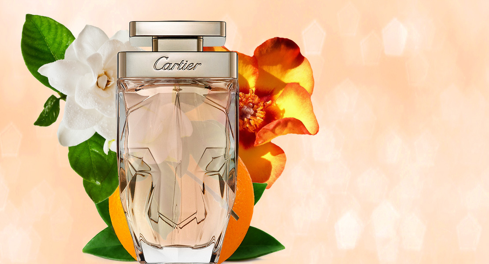

Новый аромат Idole L'Intense от Lancome
У Lancome выходит новый аромат Idole L'Intense. Это более интенсивная и яркая версия вышедшего
в прошлом году аромата Idole. Новинка представляет собой чувственный и элегантный шипрово-цветочный
аромат для женщин, подчеркнутый букетом пудровых, цитрусовых и цветочных нот. Он начинается цитрусовыми нотами бергамота,
апельсина и мандарина. Цветочные ноты сердца раскрываются жасмином и розой, а в базе аромат переходит в глубокие
древесные, пряные и цветочные ноты ванили, кашемирового, кедрового и сандалового дерева, пачули и акации.
|
Новый аромат La Panthere Parfum от Cartier

Образ пантеры, олицетворяющий женственность, загадочность и элегантность, присутствует во многих
ювелирных и парфюмерных творениях дома Cartier. В 2014 году бренд выпустил аромат, названный
в честь этого грациозного хищника - La Panthere, а в сентябре 2020 года в свет выходит новая версия
этого знакового издания - La Panthere Parfum. Парфюмер дома Cartier, Матильда Лоран,
создала более богатую и насыщенную интерпретацию современного шипрового аромата.
|